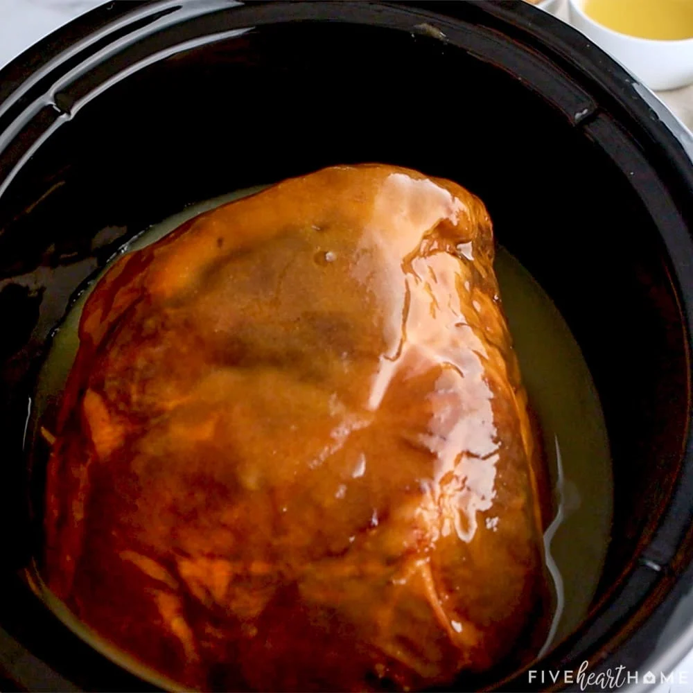

Easy Ham

Description
An easy crockpot ham anybody can make. Requires little effort other than time.
Ingredients
- Any ham that will fit inside a crockpot
- Honey
- Brown Sugar
Steps
- Place ham in crockpot. Fill crockpot with water until ham is mostly covered
- Put crockpot on "low" heat
- Drizzle a smackledorf of honey on top
- Dust honey with brown sugar
-
- This is the ham's new home for 1/2 to 1 day
- Every couple of hours, or when you remember, reapply honey and brown sugar to taste
- After 12 to 24 hours, the ham will be ready!
Home